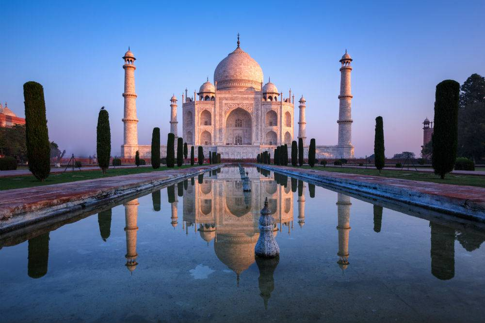

Agra

Itinerary
Day 1 Delhi – Agra
agra itineraryStarting from Delhi, proceed to Agra after an early breakfast. You can either catch the Shatabdi train or hire a car (with driver) and reach Agra by lunch time. Post lunch and a siesta, proceed to the magnificent Taj Mahal. Avoid visiting it in the afternoon since it can get very warm and the hot marble can scald your bare feet since shoes are not allowed in the monument.
Evenings tend to be quite crowded, but the Taj is extremely beautiful at dusk. Get a tour from a certified guide to acquaint yourself with the history and significance of this magnificent monument. Post the tour, spend remainder of the evening enjoying Taj as the sun sets. Make sure that you hang around till closing time (7 PM).
Day 2 Agra
agra itineraryToday will be a long day! Head to the Taj Mahal before 6am when the gates open for the day. This glorious monument is at its best under the early morning sun. It is the best time to click pictures as not only is the light wonderful but it’s relatively less crowded too. The Taj needs to be viewed at both dusk, dawn, and I’ll leave the last one for later.
After breakfast visit the sprawling Agra Fort and explore its vast groundswith a certified guide. Post lunch proceed to Itimad-ud-daulah and Sikandara (Akbar’s serenely beautiful tomb).
In the evening, head to Mehtab Garden for a unique (and your last!) view of the Taj Mahal from across the Yamuna river!
Day 3 Day trip to Fatehpur Sikri
agra itineraryAfter an early breakfast head to Fatehpur Sikri, the first planned city of the Mughals and also the first one designed in Mughal architecture, an amalgamation of Indian architecture, Persian and Islamic architecture. It was declared a UNESCO World Heritage Site in 1986.
Return back to Agra in the afternoon and use the remainder of the day to relax or head back to the Taj Mahal again!!
Day 4 Agra – Delhi
Return to Delhi.
Tips:
Shift your days around if your travel days include a Friday (Taj Mahal is closed).
On Day 3, if you are up to it you can head back to Delhi in the evening.